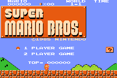

Classic NES Series - Super Mario Bros. (USA, Europe)
EEPROM 64K Save Format Spec gbakit Built-In 💾 MultiBoot 🎮 4P Link 📡 Wireless
Cartridge Identity
- Game Code
FSME(FamilyFSM)- Header Title
SUPER MARIO- Maker / Revision
01/ rev0- ROM Size
- 1.0 MiB (1,048,576 B)
- Save Media
EEPROM 64K- SHA-256
5e8ee5d663a7767639ede878cee93d6add10f37c96e03e21551af0073de16879
Screenshots

Link Cable & Multiplayer Communications
This title contains detected communication capabilities: 💾 MultiBoot 🎮 4P Link 📡 Wireless.
Detailed protocol specifications, SIO registers, Joybus commands, and MultiBoot sequences are documented in the Link & Multiplayer Reference.
- Multi-Player SIO (4P)
- 16-bit ring network · SIOCNT (
0x04000128) literals:0x00547c,0x0057ec,0x005944· SIODATA32/SIOMULTI0 (0x04000120) literals:0x000e10,0x005790,0x005a6c - Nintendo Wireless Adapter
- AGB-015 RFU driver signature
RFU-MBOOTat offset0x005fbc - Nintendo Wireless Adapter
- AGB-015 RFU driver signature
RFU-MBOOTat offset0x013994 - Nintendo Wireless Adapter
- AGB-015 RFU driver signature
RFU-MBOOTat offset0x017b28 - Nintendo Wireless Adapter
- AGB-015 RFU driver signature
NINTENDOSio32IDat offset0x005fc8 - Nintendo Wireless Adapter
- AGB-015 RFU driver signature
NINTENDOSio32IDat offset0x017b34 - Single-Cart MultiBoot
- Single-Cartridge MultiBoot (Download Play) client/server handler · Thumb SWI 0x25 (
0xDF25):0x000876,0x038054,0x07f142,0x087d26· SDK signatures:MBOOTat0x005fc0
Battery Save Format Specification
Open Full Save Format SpecDownload save-format.json
- Specification Coverage
- 4 mapped fields · 0 verified checksum(s) · Confidence: HIGH
- gbakit Built-In Support
- Built-in (FSME)
gbakit save verify FSME save.sav
gbakit save decode FSME save.sav
gbakit save fix FSME damaged.sav -o repaired.savObserved Battery Save Layout
- Fill Byte & Active Size
0x00fill · 512–512 / 8,192 B active (entropy 0.16 bits/B)- Active Offset Ranges
0x0–0x1FF(1 total)- ASCII Magic / Headers
_OIR1- Observed Variable Regions
- 0 bytes across 0 spans: None
- Candidate Checksum/Counter Spans
- None
Text, Fonts & Scene Data
- Primary Text Encoding
- Compressed / custom-encoded text
- Font & VWF Indicators
- No VWF Table No 1bpp Font · BIOS SWIs: BitUnPack
0x10:15· LZ770x11/12:20· Huffman0x13:11· RLE0x14/15:20 - Scene & Packaging
0ROM pointer tables (≥32 entries,0≥200) ·0relativeu32TOCs ·55OAM metasprite hits
Regional Variants & Revisions (Family FSM)
- Famicom Mini 01 - Super Mario Bros. (Japan) (En) (Rev 1) (
FSMJ, 1 MiB) - Super Mario Bros. (Japan) (Hot Mario Campaign) (
FSMJ, 1 MiB)